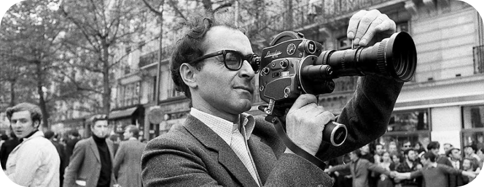
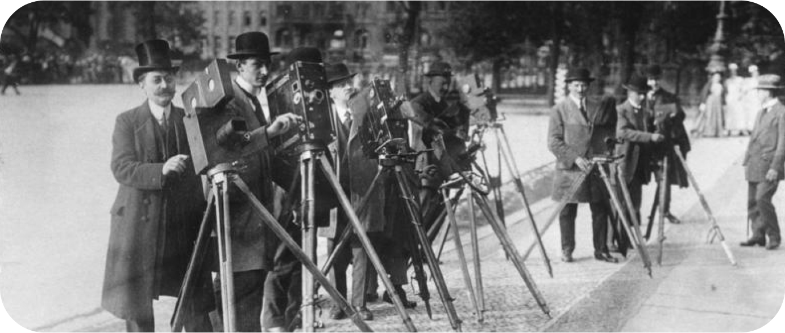
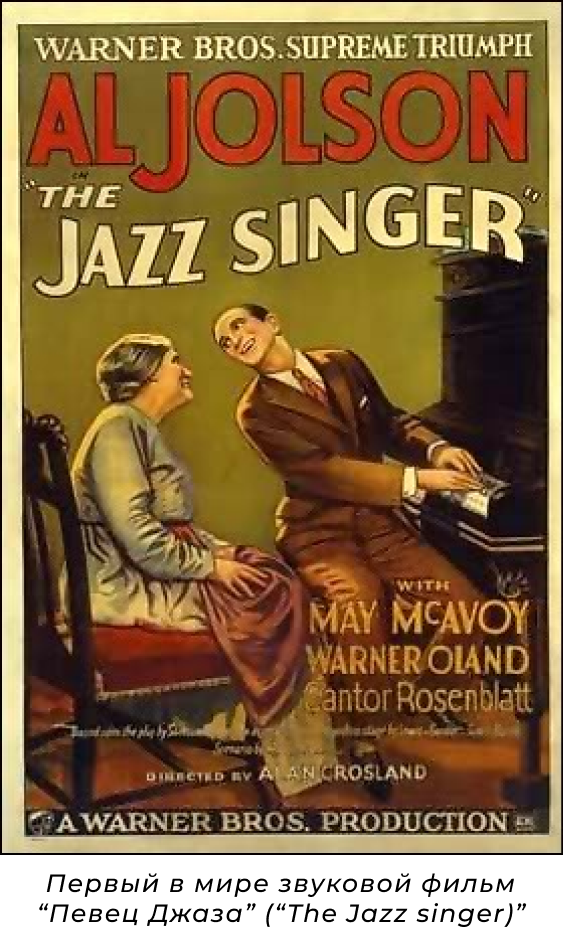

- И
- С
- Т
- О
- Р
- И
- Я
"Прежде, чем мы захотели снимать, мы хотели увидеть"— Жан-Люк Годар (франко-швейцарский кинорежиссёр, кинокритик, актёр, сценарист, монтажёр и кинопродюсер, стоявший у истоков французской новой волны в кинематографе.)

"Прежде, чем мы захотели снимать, мы хотели увидеть"— Жан-Люк Годар (франко-швейцарский кинорежиссёр, кинокритик, актёр, сценарист, монтажёр и кинопродюсер, стоявший у истоков французской новой волны в кинематографе.)
На изображении Жан-Люк-Годар, режиссёр таких фильмов, как "Жить своей жизнью", "Презрение", "Замужняя женщина"
Кинематограф был изобретен в XIX веке и стал крайне популярен в XX веке.
В понятие кинематографа входят
киноискусство — вид современного изобразительного искусства, произведения
которого создаются при помощи движущихся изображений, и киноиндустрия
(кинопромышленность) — отрасль экономики, производящая кинофильмы, спецэффекты для кинофильмов,
мультипликацию и демонстрирующая эти произведения для зрителей.
Произведения киноискусства создаются при помощи кинотехники.
Изучением
кинематографа занимается наука киноведение.
В истории кино принято выделять три определяющих эры. Они достаточно подробно описаны ниже.
Рождение кинематографа
Исторически кинематограф появился в результате решения задачи по закреплению на материальном носителе изображения непрерывного движения объектов и проекции этого движения на экран. Для решения этой задачи необходимо было создание сразу нескольких технических изобретений кинотехники.: гибкой светочувствительной пленки, аппарата хронофотографической съемки, проектора быстро сменяющихся изображений.
В 1895-1896 гг были изобретены аппараты, сочетающие в себе основные элементы кинематографа: во Франции - «синематограф» братьев Л. и О. Люмьер (1895); в Англии – «аниматограф» Р.У. Пола (1896); в России – «хронофотограф» А. Самарского (1896) и «стробограф» И. Акимова (1896); в США – «витаскоп» Т. Армата (1896).
Распространение кинематографа было положено съемкой и публичной демонстрацией первых короткометражных фильмов, прошедшей в течении 1896-1897 годов; Подобные демонстрации короткометражных фильмов были произведены во всех мировых столицах. В России первые показы были организованы в апреле 1896 года в Москве и Санкт-Петербурге, а затем на Всероссийской ярмарке в Нижнем Новгороде. Тогда же были проведены первые отечественные любительские киносъемки (В. Сашин, А. Федецкий, С. Макаров и др.)

Эпоха немого кино
В этот период с усложнением и удлинением сюжета фильмов начинают формироваться жанры кинематографа, оформляется их художественное своеобразие, создается специфический для каждого жанра набор изобразительных приемов. Наивысшего своего расцвета «немое» кино достигает к 20-м годам, когда оно уже вполне оформляется как самостоятельный вид искусства обладающий своими собственными художественными средствами.
Совершенствование съемочной и проекционной техники способствовало дальнейшему увеличению длины фильмов, качественному и количественному увеличению художественных приемов съемки, актерской игры и режиссуры. А широкое распространение кинематографа и популярность кинематографа обеспечили его экономическую выгодность, что, однако, не могло не сказаться на художественной ценности снимаемых кинокартин.

Приход звука
Еще до начала XX века Томас Эдисон пытался синхронизировать кинескоп c фонографом, но потерпел неудачу. Однако в последствии Уильям Диксон - соавтор Эдисона утверждал, что ему уже в 1889 году удалось создать кинетофонограф - прибор, воспроизводивший звук и изображение одновременно. Однако не существует никаких доказательств, подтверждающих его слова.
В ранний период кинематографа звуковое кино пытались создать во множестве стран, но столкнулись с двумя основными проблемами: трудность в синхронизации изображения и звука и недостаточная громкость последнего. Первая проблема была решена путем записи и звука, и изображения на одном и том же носителе, но для решения второй проблемы требовалось изобретение усилителя низкой частоты, что произошло лишь в 1912 году, когда киноязык развился настолько, что отсутствие звука уже не воспринималось как серьезный недостаток.
Уже в 1926 году Warner Brothers, приобрев патент на новейшее кинозвуковое изобретение, выпустила несколько звуковых фильмов, состоящих в основном из музыкальных номеров, но особого успеха у зрителей они не имели. Успех пришел только с фильмом "Певец джаза", в котором кроме музыкальных номеров Эла Джолсона присутствовали и его короткие реплики. 6 октября 1927 года — день премьеры "Певца Джаза" — принято считать днем рождения звукового кино.
В настоящее же время существуют очень изощренные системы звукового сопровождения кино. Число отдельных
звуковых каналов доходит до 7, а в экзотических системах даже до 12. Разумеется, все это призвано усилить глубину погружения
зрителя в атмосферу просматриваемого фильма.
В настоящее же время существуют очень изощренные системы звукового сопровождения кино. Число отдельных звуковых каналов доходит до 7, а в экзотических системах даже до 12. Разумеется, все это призвано усилить глубину погружения зрителя в атмосферу просматриваемого фильма.